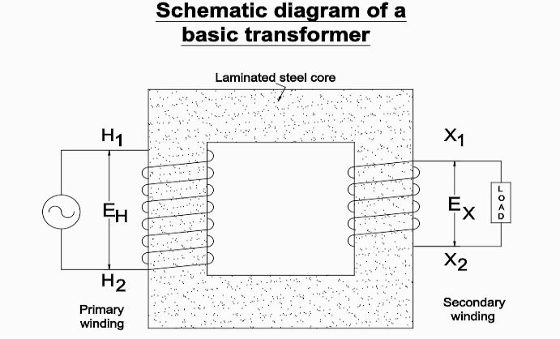

<h1 style="padding-left:4%;padding-top: 2%;padding-bottom: 2%;padding-right: 10%;border-bottom: 1px solid #BDBDBD;">


Schemaic Diagram of Transformer and Three Phase Connections


</h1>

Autocad 2D

<h2></h2>





